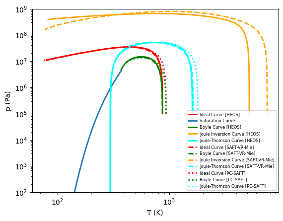

Ideal Curves¶
Ideal curves, sometimes known as characteristic curves or Brown’s curves in the literature, are a test of the extrapolation behavior of an EOS. These curves are defined as level set functions of a derivative, so some sort of tracing method is needed to obtain the curve. One possible method is that employed in CoolProp where a polar tracing method locks onto the curve and integrates it until termination is requested.
Ideal Curve:
\[Z=1\]
Boyle Curve:
\[\left.\frac{\partial Z}{\partial v}\right|_{T} = 0\]
Joule-Inversion:
\[\left.\frac{\partial Z}{\partial T}\right|_{v} = 0\]
Joule-Thomson:
\[\left.\frac{\partial Z}{\partial T}\right|_{p} = 0\]
[1]:
import numpy as np
import matplotlib.pyplot as plt
import CoolProp, scipy.optimize
CP = CoolProp.CoolProp
import teqp
[2]:
# Some helper classes
class teqpAbstractStateShim(object):
"""
A shim class that exposes a CoolProp-compatible interface
so that the tracing can use either teqp or CoolProp
"""
def __init__(self, j):
"""
"""
self.model = teqp.make_model(j)
self.z = np.array([1.0])
self.R = self.gas_constant()
def update(self, pair, in1, in2, guess=None):
if pair == CP.PT_INPUTS:
self.p_ = in1
self.T_ = in2
# Assume to be ideal gas
if not guess:
rho_guess = self.p_/(self.R*self.T_)
rho = rho_guess
else:
rho = guess
for i in range(10):
# Iterate for density a few times
Ar0n = self.model.get_Ar02n(self.T_, rho, self.z)
Ar01 = Ar0n[1]; Ar02 = Ar0n[2]
pEOS = rho*self.R*self.T_*(1+Ar01)
dpdrho = self.R*self.T_*(1 + 2*Ar01 + Ar02)
res = (pEOS-self.p_)/self.p_
dresdrho = dpdrho/self.p_
change = -res/dresdrho
if abs(change/rho-1) < 1e-10 or abs(res) < 1e-12:
break
rho += change
self.rhomolar_ = rho
else:
raise ValueError("????")
def update_with_guesses(self, pair, val1, val2, guesses):
return self.update(pair, val1, val2, guesses.rhomolar)
def keyed_output(self, key):
if key == CP.iT:
return self.T_
elif key == CoolProp.iZ:
return self.p_/(self.rhomolar_*self.R*self.T_)
elif key == CoolProp.iT_triple:
return 80
elif key == CoolProp.iP_critical:
return 6e6
else:
raise KeyError(key)
def gas_constant(self, ):
return self.model.get_R(self.z)
def p(self):
return self.p_
def T(self):
return self.T_
def rhomolar(self):
return self.rhomolar_
def first_partial_deriv(self, k1, k2, k3):
keys = (k1, k2, k3)
if keys == (CoolProp.iDmolar, CoolProp.iT, CoolProp.iP):
return -self.first_partial_deriv(CP.iP, CP.iT, CP.iDmolar)/self.first_partial_deriv(CP.iP, CP.iDmolar, CP.iT)
elif keys == (CoolProp.iP, CoolProp.iDmolar, CoolProp.iT):
Ar0n = self.model.get_Ar02n(self.T_, self.rhomolar_, self.z)
Ar01 = Ar0n[1]; Ar02 = Ar0n[2]
dpdrho_T = self.R*self.T_*(1 + 2*Ar01 + Ar02)
return dpdrho_T
elif keys == (CoolProp.iP, CoolProp.iT, CoolProp.iDmolar):
Ar01 = self.model.get_Ar01(self.T_, self.rhomolar_, self.z)
Ar11 = self.model.get_Ar11(self.T_, self.rhomolar_, self.z)
dpdT_rho = self.R*self.rhomolar_*(1 + Ar01 - Ar11)
return dpdT_rho
else:
raise KeyError(keys)
# This approach was taken from CoolProp
class AbstractCurveTracer(object):
def __init__(self, *, AS, p0, T0):
"""
p0 : Initial pressure [Pa]
"""
self.P = [p0]
self.T = []
self.RHO = []
self.AS = AS
# Solve for Temperature for first point
T_ = scipy.optimize.newton(self.objective_T, T0, args = (p0, -1))
print(T_)
self.T.append(T_)
def objective_T(self, T, p, rho_guess):
""" Base class function """
if rho_guess < 0:
self.AS.update(CoolProp.PT_INPUTS, p, T)
else:
guesses = CoolProp.CoolProp.PyGuessesStructure()
guesses.rhomolar = rho_guess
self.AS.update_with_guesses(CoolProp.PT_INPUTS, p, T, guesses)
return self.objective()
def TPcoords(self, t, lnT, lnp, rlnT = 0.1, rlnp = 0.1):
return np.exp(lnT + rlnT*np.cos(t)), np.exp(lnp + rlnp*np.sin(t))
def obj_circle(self, t, lnT, lnp):
T2, P2 = self.TPcoords(t, lnT, lnp)
if len(self.RHO) > 0:
guesses = CoolProp.CoolProp.PyGuessesStructure()
guesses.rhomolar = self.RHO[-1]
self.AS.update_with_guesses(CoolProp.PT_INPUTS, P2, T2, guesses)
else:
self.AS.update(CoolProp.PT_INPUTS, P2, T2)
r = self.objective()
return r
def trace(self):
t = self.starting_direction()
for i in range(1000):
try:
lnT = np.log(self.T[-1])
lnp = np.log(self.P[-1])
t = scipy.optimize.brentq(self.obj_circle, t-np.pi/2, t+np.pi/2, args = (lnT, lnp))
T2, P2 = self.TPcoords(t, lnT, lnp)
self.T.append(T2)
self.P.append(P2)
self.RHO.append(self.AS.rhomolar())
if self.T[-1] < self.AS.keyed_output(CoolProp.iT_triple) or self.P[-1] > 1000*self.AS.keyed_output(CoolProp.iP_critical):
break
except ValueError as VE:
print(VE)
break
return self.T, self.P
class IdealCurveTracer(AbstractCurveTracer):
def __init__(self, *args, **kwargs):
AbstractCurveTracer.__init__(self, *args, **kwargs)
def objective(self):
""" Z = 1 """
return self.AS.keyed_output(CoolProp.iZ) - 1
def starting_direction(self):
""" Start searching directly up ( or calculate as orthogonal to gradient ) """
return np.pi/2.0
class BoyleCurveTracer(AbstractCurveTracer):
def __init__(self, *args, **kwargs):
AbstractCurveTracer.__init__(self, *args, **kwargs)
def objective(self):
""" dZ/dv|T = 0 """
r = (self.AS.p() - self.AS.rhomolar()*self.AS.first_partial_deriv(CoolProp.iP, CoolProp.iDmolar, CoolProp.iT))/(self.AS.gas_constant()*self.AS.T())
#print self.AS.T(), self.AS.p(), r
return r
def starting_direction(self):
""" Start searching directly up """
return np.pi/2.0
class JouleInversionCurveTracer(AbstractCurveTracer):
def __init__(self, *args, **kwargs):
AbstractCurveTracer.__init__(self, *args, **kwargs)
def objective(self):
""" dZ/dT|v = 0 """
r = (self.AS.gas_constant()*self.AS.T()*1/self.AS.rhomolar()*self.AS.first_partial_deriv(CoolProp.iP, CoolProp.iT, CoolProp.iDmolar)-self.AS.p()*self.AS.gas_constant()/self.AS.rhomolar())/(self.AS.gas_constant()*self.AS.T())**2
#print self.AS.T(), self.AS.p(), r
return r
def starting_direction(self):
""" Start searching directly up """
return np.pi/2.0
class JouleThomsonCurveTracer(AbstractCurveTracer):
def __init__(self, *args, **kwargs):
AbstractCurveTracer.__init__(self, *args, **kwargs)
def objective(self):
""" dZ/dT|p = 0 """
dvdT__constp = -self.AS.first_partial_deriv(CoolProp.iDmolar, CoolProp.iT, CoolProp.iP)/self.AS.rhomolar()**2
r = self.AS.p()/(self.AS.gas_constant()*self.AS.T()**2)*(self.AS.T()*dvdT__constp - 1/self.AS.rhomolar())
#print self.AS.T(), self.AS.p(), r
return r
def starting_direction(self):
""" Start searching directly up """
return np.pi/2.0
[3]:
# And here is a block of code that actually does the calculations with the tracer,
# with three different models for propane
backend = 'HEOS'
fluid = 'Propane'
ASCP = CP.AbstractState(backend, fluid)
ASteqpSAFTVRMie = teqpAbstractStateShim({'kind': 'SAFT-VR-Mie', 'model': {'names': [fluid]} })
ASteqpPCSAFT = teqpAbstractStateShim({'kind': 'PCSAFT', 'model': {'names': [fluid]} })
for AS,modelabbrv in [
(ASCP,'HEOS'),
(ASteqpSAFTVRMie,'SAFT-VR-Mie'),
(ASteqpPCSAFT,'PC-SAFT')
]:
print(f'---- {modelabbrv} ----')
kwargs = dict(lw = 2)
for klass, label, p0, T0, color in [
(IdealCurveTracer, 'Ideal Curve', 1e5, 900, 'r'),
(BoyleCurveTracer, 'Boyle Curve', 1e5, 800, 'g'),
(JouleInversionCurveTracer, 'Joule Inversion Curve', 1e5, 1800, 'orange'),
(JouleThomsonCurveTracer, 'Joule-Thomson Curve', 1e5, 1800, 'cyan')
]:
try:
print(label)
tracer = klass(AS=AS, p0=p0, T0=T0)
x,y = tracer.trace()
if modelabbrv == 'HEOS':
style = '-'
elif modelabbrv == 'PC-SAFT':
style = ':'
else:
style = '--'
plt.plot(x, y, style, label=f'{label} [{modelabbrv}]', color=color, **kwargs)
if modelabbrv == 'HEOS' and label == 'Ideal Curve':
print('Saturation Curve')
Tt = tracer.AS.keyed_output(CoolProp.iT_triple)
Tc = tracer.AS.keyed_output(CoolProp.iT_critical)
Ts = np.linspace(Tt, Tc - 1.e-6)
ps = CoolProp.CoolProp.PropsSI('P','T',Ts,'Q',0,backend + '::' + fluid)
plt.plot(Ts, ps, '-', label = 'Saturation Curve', **kwargs)
except BaseException as BE:
print(BE)
pass
plt.yscale('log')
plt.xscale('log')
plt.xlabel('T (K)')
plt.ylabel('p (Pa)')
plt.ylim(100, 1e9)
plt.legend(loc='best', fontsize=6)
plt.savefig('ideal_curves.pdf')
plt.show()
---- HEOS ----
Ideal Curve
871.9188660407749
Saturation Curve
Boyle Curve
871.3231023164184
solver_rho_Tp was unable to find a solution for T= 367.236, p=4.23194e+06, with guess value 7148.15 with error: The molar density of -534.989081 mol/m3 is below the minimum of 0.000000 mol/m3
Joule Inversion Curve
5203.0347638747335
Joule-Thomson Curve
1607.8131112921665
f(a) and f(b) must have different signs
---- SAFT-VR-Mie ----
Ideal Curve
869.1678675951697
Boyle Curve
868.5717695687255
The function value at x=2.8449889669026227 is NaN; solver cannot continue.
Joule Inversion Curve
7532.324134784955
Joule-Thomson Curve
1639.8924107978214
---- PC-SAFT ----
Ideal Curve
937.290324467432
Boyle Curve
936.5094002217145
The function value at x=2.8848878615386546 is NaN; solver cannot continue.
Joule Inversion Curve
Failed to converge after 50 iterations, value is 38232770.52660468.
Joule-Thomson Curve
1797.0614181657859
